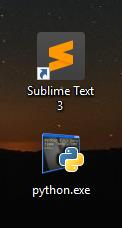
Se necesita tener instalado Python y las librerias necesarias para utilizar Django,ademas de un editor de texto como sublime
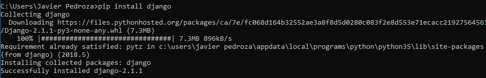
Si no tines instaldas las librerias de Django las instalaremos con el siguiente comando
pip install Django
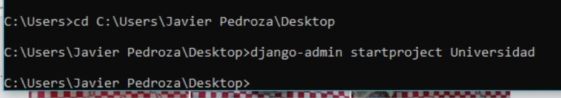
Desde terminal iniciaremos un proyecto en Django con el siguiente comando:
django-admin startproject Universidad
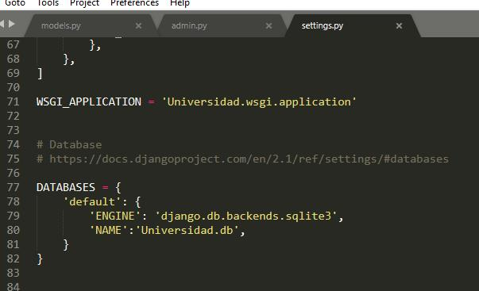
Definimos el motor de base de datos que vamos a utilizar asi como el nombre de la base de datos.
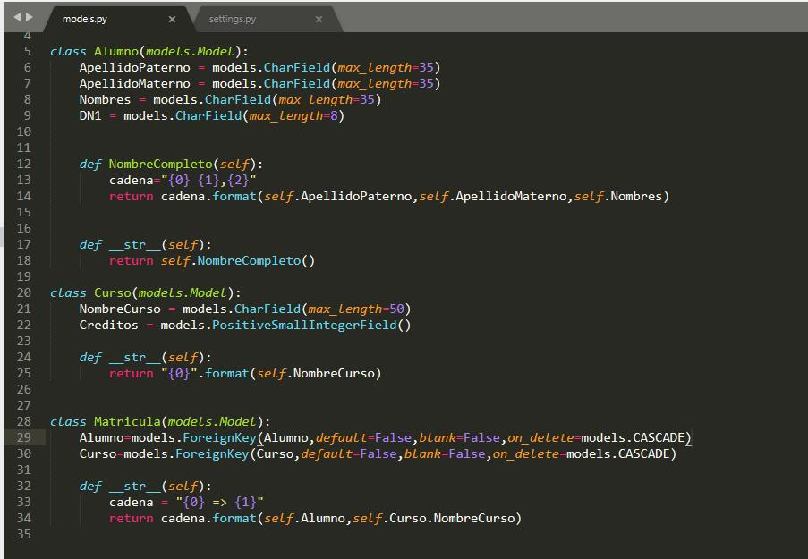
Definimos las tablas y atributos a utilizar en nuestro programa.
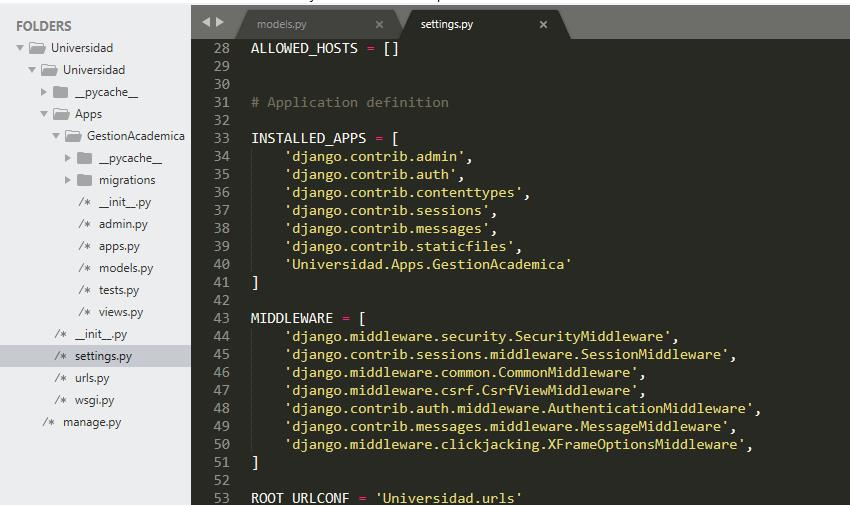
Definimos que Django utilizara nuestro proyecto.
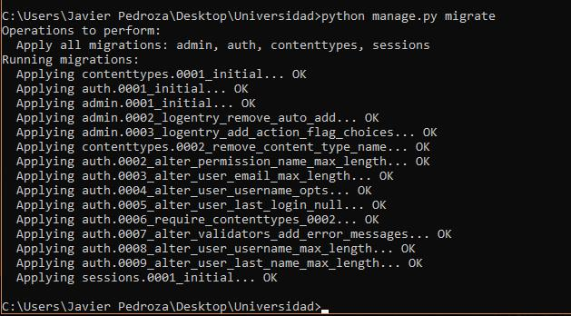
Migramos nuestro modelo de base de datos a Django con el comando:
Python manage.py migrate
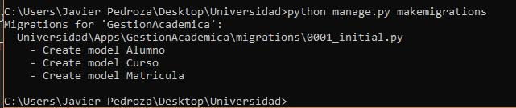
Ahora creamos los campos con los atributos que ya antes definimos, esto se hace con el comando:
Python manage.py makemigrations
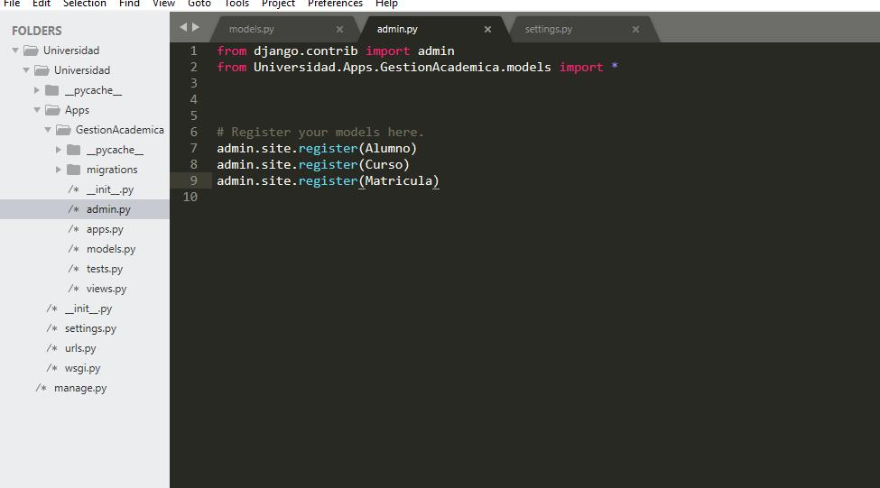
Definimos que tablas seran administradas por Django.
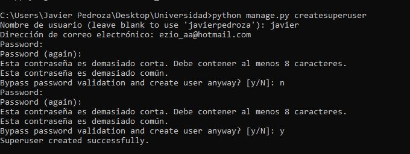
Creamos un super usuario para administrar la base de datos, con el siguiente comando:
Python manage.py createsuperuser
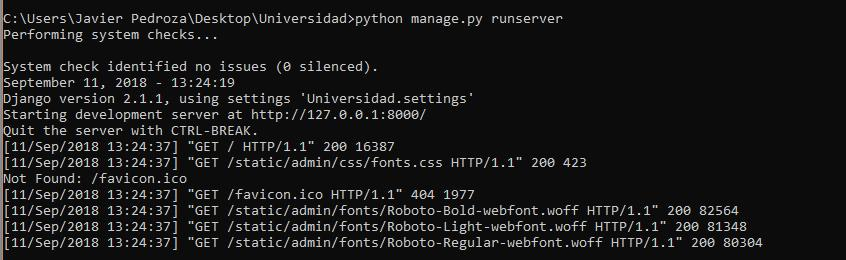
Iniciamos el servidor que trae incorporado Django, con el siguiente comando:
Python manage.py runserver
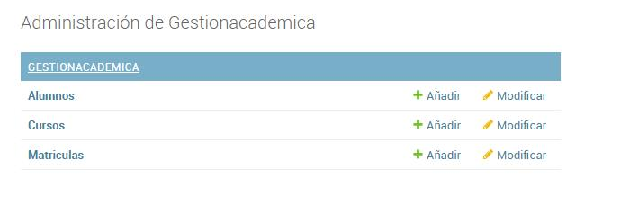
Abrimos el local host en nuestro navegador donde aparecera la interfaz para administrar la base de datos con
Django.